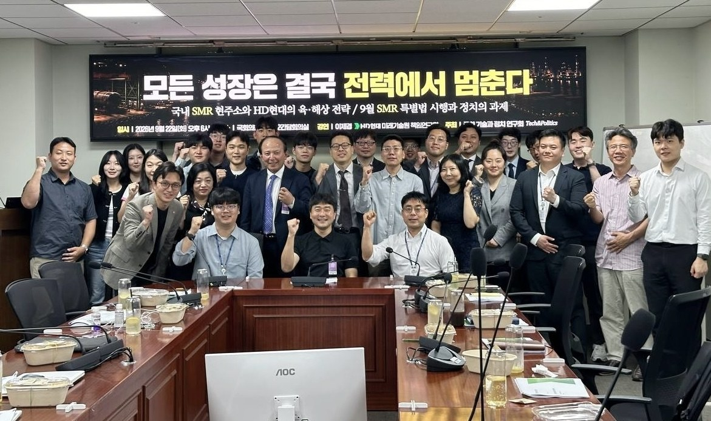

Archive
-
「모든 성장은 결국 전력에서 멈춘다」
SMR을 바다로 가져가는 벽은 기술이 아니라 제도. 국제 규칙이 다시 쓰이는 지금, 조선과 원자력을 함께 가진 한국이 이를 주도하도록 병목을 치우는 것이 정치의 과제
-
「'국회 기술과 정치 연구회' 정식 출범」
8개월 활동을 기반으로 백경훈 초대회장을 선출하며 정식 출범 -
「AI가 먼저 삼킨 일자리? 국내 1위 채용 데이터에 물었다」
잡코리아·알바몬 데이터로 본 3년의 변화 — 채용공고 43% 감소, 입사지원 2.1배 증가로 공고 1건당 경쟁률 3.6배 상승. 신입(-48%)과 시니어·중장년(-46%)이 함께 좁아지는 가운데 AI 직무 공고만 상반기 1.7배로 역주행 -
「자원빈국 대한민국은 어떻게 제련소를 수출했나」
20세기 후반 핵심광물·제련의 주도권을 쥐었던 미국이 21세기 들어 중국에 끌려다니는 중. 적자 산업을 무한정 끌고 갈 수 없는 시장경제, 조정이 어려운 민주주의 체제의 핸디캡, 중국의 압도적 보조금과 저가공세가 겹친 결과. 이 핸디캡이 구조적 실패로 끝나지 않게 하는 데에 기술을 읽는 정치의 역할이 있음
-
「AI는 어떻게 우리의 무기가 되는가」
일본·인도 사례처럼 유권자 소통과 공약 만들기에 AI를 활용하는 흐름은 이제 막을 수 없음. 의원실 챗봇은 지금 당장 돈 없이도 시작 가능하며, 홍보용보다 시민 의견 수렴용으로 활용 가치가 큼
-
「피지컬AI와 로보틱스, 로보틱스랩의 도전」
Atlas에 집약된 로보틱스와 시장의 열광. 그 이면에는 이 거대한 흐름을 조율해야 할 정치의 역할이 있음. 기술 그 자체보다 기술을 어떻게 수용하고 사회 시스템을 어떻게 재설계할지가 국가의 명운을 가르는 시대
-
「한미 조선협력과 조선산업의 미래」
한미 조선협력은 단순한 공장 이전이나 하청 관계가 아니라 기술동맹의 성격. 미국의 해군·잠수함 역량을 보완하는 과정에 한국 조선산업이 참여하는 것은 장기적으로 한국 조선기술을 글로벌 표준으로 끌어올리는 자산이 될 수 있음
정기 활동 — 브라운백 미팅 · 모닝북클럽